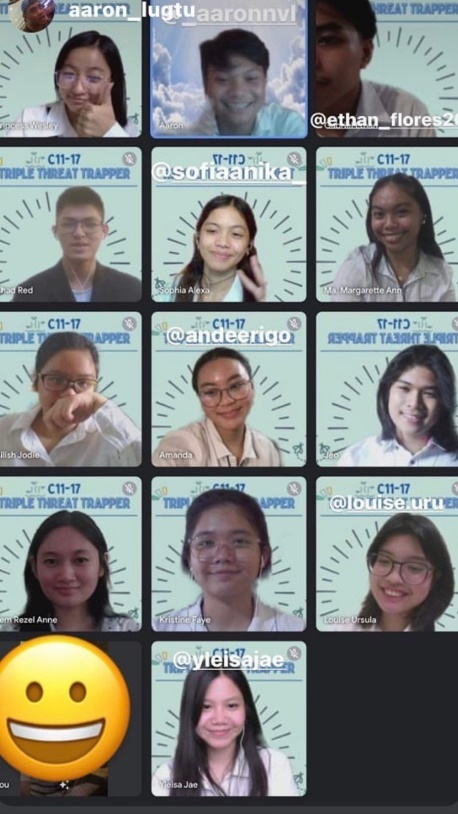

What is CAPSTONE?
C-Culminative A-Application P-Practicality S-Sustainable T-Tangible O-Objective N-Natural E-Environment
Capstone is a culminative academic experience that integrates a student's knowledge and application of skill into work-related exhibitions. Through its practicality alone, it helps synthesize sustainable initiatives that give way to tangible solutions when combating a chosen issue of a specific community (Data Statistics 2022).
The Capstone project is a beneficial preparation for the future because it is an investment that accomplishes set objectives. More often than not, the emphasis is towards the use of natural and environment-friendly goods and services.
Capstone is an interactive work immersion that deals with strengthening student’s abilities to overcome academic challenges and to become ready for their future careers as it collates skill sets that are beneficial.
